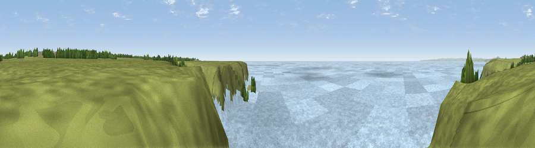

Viewpoint near Lizard
#9597 in England · top 19% of its area beats it · near LizardThe view, rendered

A 360° render of this exact spot computed from the terrain model, tree cover and land cover — summer colours, afternoon light, calibrated against photographs of famous viewpoints. Real trees, hedges and buildings will differ in detail.
The panorama
Grey silhouette: terrain skyline in each direction (720 bearings, Earth curvature and refraction included). Dashed green: skyline with trees (+15 m) and buildings (+8 m) as obstacles. Blue strip: how far the ground is visible on each bearing.
Where the view opens
Wedge length = distance to the farthest visible ground on that bearing (vegetation-aware). Rings at 10, 25 and 50 km.
What fills the view
67% water · 32% grassland
Angular shares of the visible panorama (visual magnitude), not map area. Landscape diversity 0.29 (0–1 Shannon).
Key numbers
More beautiful places nearby
The staircase of upgrades: each row has a higher view potential than everything closer. Driving times are estimates from straight-line distance, calibrated against real road routing — check an actual route before setting out.
| Place | Direction | Drive | Score |
|---|---|---|---|
| Viewpoint near Lizard | SSE · 1 km | ~4 min | 65.2 |
| Viewpoint near Mullion | NNW · 2 km | ~5 min | 72.0 |
| Viewpoint near Mullion | NNW · 2 km | ~5 min | 72.7 |
| Viewpoint near Porthoustock | ENE · 15 km | ~27 min | 74.0 |
| Viewpoint near Ashton | NNW · 16 km | ~28 min | 81.3 |
| Tregonning Hill | NNW · 17 km | ~30 min | 83.0 |
| Rosewall Hill | NW · 30 km | ~48 min | 88.0 |
| Viewpoint near Combe Martin | NNE · 162 km | ~184 min | 88.9 |
49.98756, -5.25081 · source: screening · position refined by local search. Computed location — check access rights before visiting.